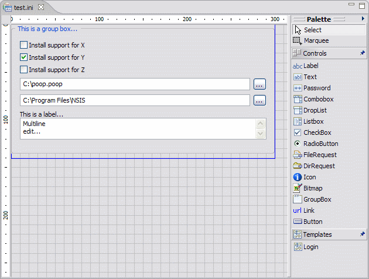
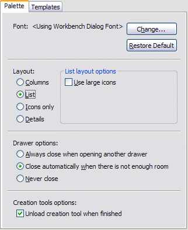
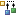

Design Editor
The Design Editor provides a
visual environment for editing InstallOptions dialog scripts. It is
registered to be the default editor of INI files. A core attribute of
the design editor is that it preserves the general formatting of a
loaded INI file, i.e., it does not
change the file structure: it preserves comments, blank lines as
well as the order of sections and lines. However, the design editor has
the restriction that a script with errors must first be corrected using
the Source Editor
before it can be opened using the design editor.
The design editor offers the following features:
- Graphical User Interface
- Graphical Editing Commands
- Creating and Modifying InstallOptions Controls
- Outline and Overview
Graphical User Interface

- Canvas
- The canvas provides the visual representation of the InstallOptions dialog. Controls can be added or removed directly on it, displaying what the overall design looks like as it evolves. ← Back
- Palette
- The design editor includes a
palette of controls and selection tools.
By default, the palette displays to the right of the canvas, but can be
moved to the left of the canvas by simply dragging it there. The
palette can be
also resized or collapsed as needed. If desired the palette can be
configured to be collapsed by default.
The palette includes the following selection tools:
- Selection - the default cursor tool, used for selecting existing controls in the canvas. Multiple controls can be selected by holding down the Ctrl key.
- Marquee - a selection tool that can be used to drag a rectangular selection area. All components that lie completely within the selection rectangle are selected.
- To customize the behavior of the design palette, right click on the palette and select the Settings... in the popup context menu. This will open the Palette Settings dialog:
- 
- ← Back
- Drawing Tools
- To help draw accurately, the
design editor has a pair of rulers, a grid, and guide lines, as well as
the ability to snap and glue. The ruler, grid, snap, and glue settings
can be changed at any time without affecting objects already placed in
the drawing. The settings apply globally to the current InstallOptions
script. Each InstallOptions script can have different settings for the
rulers, grid, snap and glue. These settings can be customized using the
Grid, Snap & Glue
dialog. Finally, the design editor provides an outline of the
InstallOptions dialog.
- Grid - The grid consists either of horizontal and vertical lines or regularly spaced dots on the canvas. It helps line up controls as they are added to the canvas.
Grid Lines
Grid Dots- Rulers - The rulers are along the top and left edges of the canvas. They help measure distances. The rulers' units match the InstallOptions script units.
- Guides - Guides are used to align controls. A guide is like a customizable grid line. A guide is created by simply clicking on the ruler. It can be removed by clicking on the guide and dragging it off the ruler. Once a guide has been created it can be dragged to any position on its ruler.
- Snap - Snap is the ability to force objects to line up. Snap makes it easier to create an accurate drawing. The design editor supports snapping to grid lines, guide lines or to other controls on the canvas. A red line appears on the canvas as an indication when a control is snapped.
- Glue- Glue is the ability of a group of controls to stay together when being moved. This is accomplished in the design editor via the guides. By default, a control is automatically glued to a guide when snapped onto it. Then, anytime the guide is moved, all controls glued to it move as well.
- Dialog Size- This is an outline of the InstallOptions dialog size. It serves as a guide for placement of controls on the dialog.
Graphical Editing Commands
The design editor includes a rich set of graphical editing commands for simplify and improve the experience of creating and editing InstallOptions scripts.
These can be accessed either from the InstallOptions menuitem in the main menu bar, by right-clicking in the editor to display the editor popup menu or by using the editor toolbar. Most commands also provide keyboard shortcuts.
- Show/Hide Drawing Tools
- These menuitems can be used to show or hide drawing tools.
The drawing tools currently supported for show/hide are:
← Back
 Rulers
Rulers Grid
Grid- Grid, Snap & Glue
- Provides a dialog box which
can be used to custom grid, snap & glue settings for the
InstallOptions script currently being edited. These settings are
persisted when the file is closed and restored when it is reopened.
← Back
- Align Controls
- Aligns selected controls with
the last selected control (the one that displays black selection
handles). If the selection or marquee tool was dragged around a group
of controls to select them, they are aligned with the control with the
lowest Z-order (also indicated by black selection handles).
The following alignments are supported:
- Align Left
- Align Center
- Align Right
-  Align Top
 Align Middle
Align Middle- Align Bottom
- Match Controls
- Matches a dimension of the selected controls with
the last selected control (the one that displays black selection
handles). If the selection or marquee tool was dragged around a group
of controls to select them, they are matched with the control at the
back of the stacking order (also indicated by black selection handles).
The following matchings are supported:
 Match Width
Match Width- Match Height
- Arrange Controls
- Changes the Z-order of the
selected controls with respect to the unselected controls. The Z-order
determines which controls are in front of other controls. The top of
the
Z-order is the control which is in front of all other controls. The
following arrangements are supported:
- Send Backward
- Send to Back
- Bring Forward
- Bring to Front
- Reset Dialog Size
- Changes the size of targeted InstallOptions dialog UI. The selected size is shown when the Dialog size outline drawing tool is displayed. The available dialog sizes and the default can be configured using the Preferences dialog.
- ← Back
- Refresh
- This command () is used to refresh the entire InstallOptions dialog design diagram. It is useful when the diagram is not painted properly because of UI interference with the painting loop. ← Back
Previous | Contents | Next
Copyright © 2004, 2005 Sunil Kamath (IcemanK).